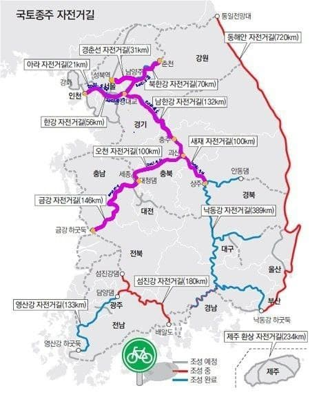

| 라이딩 날짜 | 코스 | 인증센터 | 비 고 |
|---|---|---|---|
| 2021년 4월 17일 | 한강 자전거길 | 여의도-뚝섬-강나루-팔당 | 지하철 |
| 2021년 5월 22일 | 아라 자전거길 | 아라한강갑문-아라서해갑문 | 지하철 |
| 2021년 5월 8일 | 북한강 자전거길 | 밝은광장-샛터삼거리-경각교-신매대교 | 지하철, 경춘선 |
| 2021년 6월 5일 | 남한강 자전거길 | 팔당-능내역-양평군립미술관-이포보-여주보-강천보-비내섬-목행교-충주탄금대 | 지하철, 고속(시외)버스 |
| 2021년 9월 4일 | 새재 자전거길 | 충주탄금대-수안보온천-이화령휴게소-문경불정역-상주상풍교 | 고속(시외)버스 |
| 2021년 9월 11일 | 오천 자전거길 | 괴강교-백로공원-행촌교차로-무심천교-합강공원-대청댐인증센터(금강자전거길) | 고속(시외)버스 |
| 2021년 10월 9일 | 금강 자전거길 | 금강하구둑인증센터-익산성당포구인증센터-백제보인증센터-공주보인증센터-세종보인증센터 | 고속(시외)버스 |
| 2021년 11월 27일 | 동해안 자전거길 (속초~강릉) |
영금정-동호해변-지경공원-경포해변 | 고속(시외)버스 |
| 2022년 3월 17일 ~19일 (2박3일) |
제주환상자전거길 | 제주공항-다락쉼터-해거름마을공원-송악산-법환마당-쇠소깍-표선해변-성산일출봉-김녕성세기해변-함덕서우봉해변-용두암-제주공항 | 비행기 |
| 2022년 4월 15일 ~16일 (1박2일) |
섬진강자전거길 | 강진터미널-섬진강인증센터-장군목인증센터-향가유원지인증센터-횡탄정인증센터-사성암인증센터-남도대교인증센터-매화마을인증센터-배알도수변공원인증센터-중마터미널 | 고속(시외)버스 |
| 2022년 5월 20일 ~21일 (1박2일) |
영산강자전거길 | 순창버스공용버스정류장-담양댐인증센터-메타스퀘이아길인증센터-담양대나무숲인증센터-승촌보인증센터-죽산보인증센터-느러지전망관람대인증센터-영산하구둑인증센터-목포역(KTX) | 고속(시외)버스, KTX |
| 2022년 6월 10일 | 동해안 자전거길 (속초~통일전망대) |
(속초시외버스터미널) - (영금정) - 봉포해변 - 북천철교 - 통일전망대 - (속초시외버스터미널) | 고속(시외)버스 |
| 2022년 8월 13일 | 낙동강 자전거길 (안동댐~상주보) |
(안동터미널) - 안동댐 - (상주 상풍교) - 상주보 - (상주종합버스터미널) | 고속(시외)버스, 지하철 |
| 2022년 10월 01일 ~3일 (2박3일) |
동해안 자전거길 (해맞이공원~정동진) |
(포항역) - 해맞이공원 - 고래블해변 - 월송정 - 망향휴게소 - 울진은어다리 - 임원 - 한재공원 - 추암촛대바위 - 망상해변 - 정동진 - (강릉시외버스터미널) | KTX, 고속(시외)버스 |
| 2022년 10월 21일 ~22일 (1박2일) |
낙동강 자전거길 (낙단보~낙동강하구둑) |
안동댐 - 상주상풍교 - 상주보 - 낙단보 - 구미보 - 칠곡보 - 강정고령보 - 달성보 - 합천창녕보 - 양산물문화관 - 낙동강하구둑 | 고속버스, KTX |
